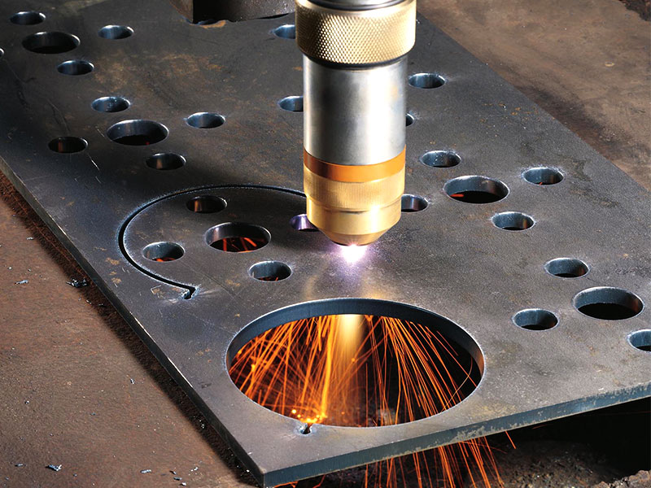
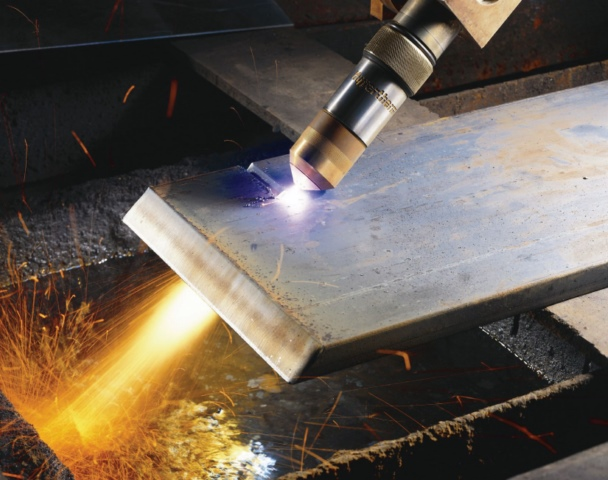
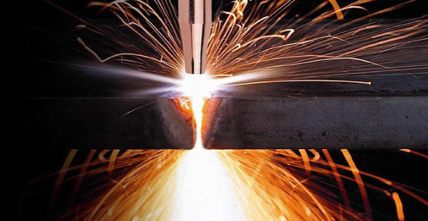

- Металлоконструкции
- Резка металла
- Плазменная резка металла
- Газокислородная резка металла
- Продольная резка металла
- Ленточнопильная резка металла
- Рубка металла гильотиной
- Художественная резка металла
- Фигурная резка металла
- Поперечная резка металла
- Продольно-поперечная резка металла
- Резка металла газом
- Гидроабразивная резка
- Лазерная резка металла
- Резка листового металла
- Резка по металлу
- Лазерная резка металла на заказ
- Резка металла по размерам заказчика
- Резка металла водой
- Резка металла пропаном и кислородом
- Электроэрозионная резка металла
- Цены на резку металла
- Струйная обработка металла
- Полировка металла до зеркального блеска
- Покраска металла
- Гибка металла
- Сверление отверстий в металле
- Изготовление деталей
- Токарные работы
- Сварка металла
- Производство стальных деталей
- Вальцовка листового металла
- Металлообработка ЧПУ
Резка металла
|
Плазменная резка металла |
|
| 1-2мм | 33руб/м |
| 3-4мм | 38руб/м |
| 5мм | 48руб/м |
| 6мм | 50руб/м |
| 8мм | 58руб/м |
| 10мм | 78руб/м |
| 12мм | 98руб/м |
| 14мм | 108руб/м |
| 16мм | 118руб/м |
|
Газокислородная резка металла |
|
| 16мм | 108руб/м |
| 18мм | 120руб/м |
| 20мм | 140руб/м |
| 25мм | 160руб/м |
| 30мм | 180руб/м |
| 40мм | 220руб/м |
| 50мм | 270руб/м |
| 60мм | 330руб/м |
| 70мм | 350руб/м |
| 80мм | 370руб/м |
| 90мм | 390руб/м |
| 100мм | 410руб/м |
Стоимость одной пробивки 1руб 1мм металла
Механическая обработка металлов – применяемые технологии
Механическая обработка металла включает в себя изменение его формы и конфигурации. Она требуется повсеместно – результаты используются в строительстве, производстве, сельском хозяйстве, прокладке железных дорог и многих других отраслях. На данный момент ручная обработка полностью уступила автоматизации. Желаемый результат достигается применением специализированных станков, воздействующих на исходный материал. Применяются следующие виды воздействия:
- резание;
- давление.
Резание – применяемые технологии и результаты
Один из самых традиционных методов придания исходному материалу желаемой конфигурации, имеет высокую популярность благодаря высокой действенности и производительности. В такую обработку металла входит комплекс задач, применяемых совместно и раздельно, они включают в себя:
- зенкеровку;
- сверление;
- протягивание;
- долбление;
- точение;
- фрезерование;
- шлифование.
Достижение желаемого результата обеспечивает различными инструментами, выбираемыми в зависимости от конечной конфигурации и свойств используемого материала.
Качество итоговой детали или конструкции определяется режимом резания, подбираемым индивидуально, с учетом всех важных параметров изделия и его конечных характеристик. К важным критериям относится:
- глубина;
- скорость;
- подача.
При резке обработка металла обеспечивает одновременным движением самой заготовки и режущей кромки по отношению друг к другу. С поверхности будущей детали снимается слой строжки, что обеспечивает придание ей желаемой конфигурации.
Современное производство оборудовано высокотехнологичными станками, контролируемыми квалифицированными операторами. Такое оборудование заранее программируется, что позволяет достичь высокой точности воспроизведения всех желаемых особенностей детали, в том числе при массовом производстве. Станки способны работать с прочными металлами, включая экзотические сплавы, титан, чугун, латунь и многие другие труднообрабатываемые материалы.
Изменение формы давлением
Применение давления в работе обуславливается свойством материалов изменять свою форму, размеры, при воздействии определенных сил, без разрушения структуры. Обработка металла таким методом начинается с его разогрева для повышения пластичности. Для этого применяются специальные электронагревательные установки, пламенные печи и современные горны. Требуемая температура варьируется исходя из химических свойств заготовки. В среднем, производительность резанья и давления приблизительно одинакова, но приоритетным является использование второго метода – он обеспечивает появление меньшего объема отходов.
Изменение вида детали давлением производится различными способами:
- ковкой;
- волочением;
- штамповкой;
- прессовкой;
- прокатом.
В ряде случаев применяется так называемая холодная обработка, при которой материал охлаждается до показателей, при которых наступает невозможность рекристаллизации. Итоговые показатели металлоконструкции или детали определяют применяемые методы и температурные режимы. Каждый из них подходит для получения определенного результата, подходящего к использованию в определенной отрасли.
Различные виды обработки металлов также включают в себя применение лазерного оборудования. Детали с высокой уникальностью требуют использования наиболее современных устройств, без которых невозможно их создание. Современные станки, управляемые квалифицированными операторами, позволяют получить желаемые результаты, наделив изделие требуемыми свойствами. Сложность обработки, затраты труда на её получение и ряд других показателей определяет конечную стоимость полученной продукции.
Резка (раскрой) металла – очень важный базовый процесс производственной обработки металла. Наша компания производит резку листового металла, фасонного и трубного проката. Все процессы выполняются на высокоточном оборудовании в соответствии с чертежами заказчика.
Данная технология раскроя, применяемая к металлу, определяется в зависимости от требований к форме материала, качеству кромки среза. При резке непременно учитываются особенности металла.
Методы раскроя металла
Существует несколько методов раскроя листового и прочего металла:
- плазменный,
- газовый,
- гильотинный,
- лазерный,
- абразивный,
- ленточнопильный.
Краткое описание способов резки металла
Плазменный
Разрез листового металла производится с помощью местного расплава с дальнейшим выдуванием или выжиганием частиц. Осуществляется процесс при температурном режиме 15000-20000 °С с помощью узконаправленного газового потока. С помощью такого раскроя можно уменьшить количество отходов, разместить элементы на листовом материале в нужном порядке. Данный метод применяем для раскроя материала толщиной от 2 до 40 мм.
Газовый
Используется точечное расплавление металла горящей газовой струей. Возможна сквозная обработка металла, как и при классической рубке. Резы могут быть прямыми либо по геометрическим лекалам (пятиугольникам, треугольникам, кругам и др.).
Гильотинный
Данную резку используют для прямолинейного раздела листового металла. Резка производится с помощью гильотинных ножниц. Резка состоит в мощном ударе подвижной части ножниц о другую часть конструкции. Гильотинный метод помогает минимизировать количество отходов без термического воздействия на металл.
Лазерный
Данная резка листового металла производится путем расплавления заготовленного материала узконаправленным лазерным лучом. Раскрой лазером можно использовать при обработке всех видов стали, алюминия, титана, меди и иных металлов.
Абразивный
Такая резка производится на специальном оборудовании с помощью вращающегося резца. Маятниковая часть устройства вводит круг в рабочую область. Разделение плоского и сортового металлопроката, разных видов арматуры с помощью абразивного диска дает возможность уйти от деформаций кромки реза, образующихся по причине воздействия высоких температур.
Ленточнопильный
Обработка металлов осуществляется на специальном оборудовании путем механического впуска материала в рабочую область, где вращается пила. Способ применяется при обработке плоского, трубного и фасонного проката. Погрешность реза равна ±1 мм на метр. В итоге такой обработки получается кромка высокого качества без деформаций. Угол резки может изменяться в рамках 0-50°.
Резка листового металла от нашей компании – это ваш шанс не потратить свои средства впустую и получить качественный готовый материал!